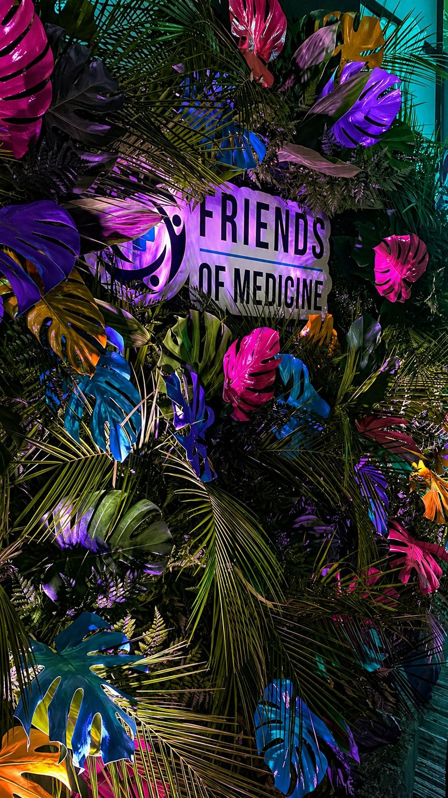
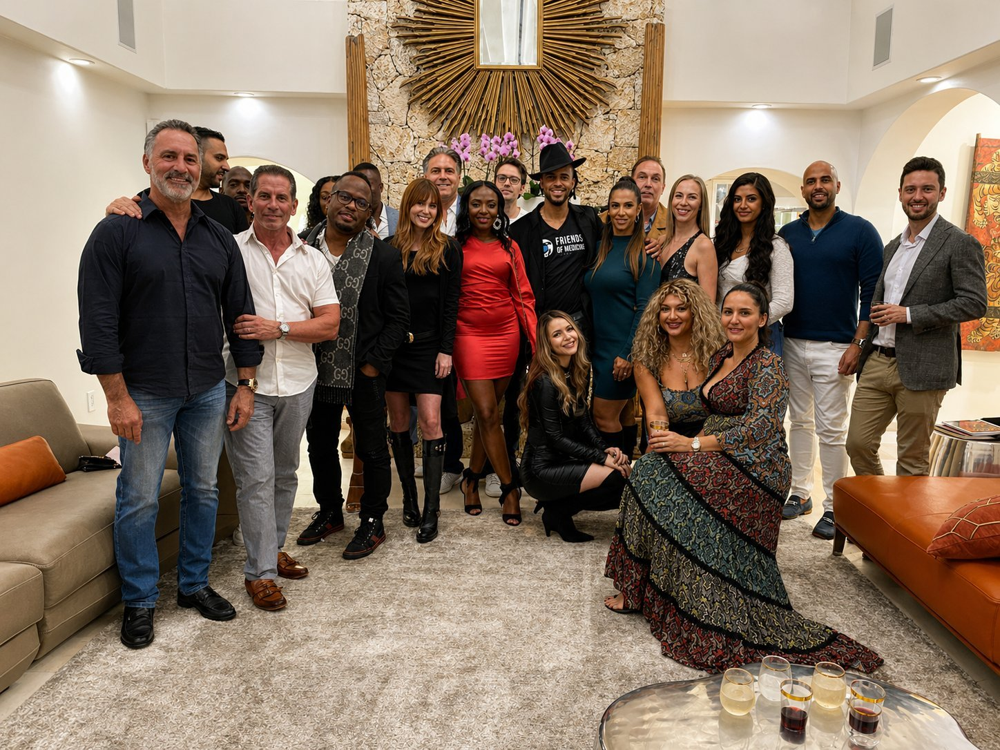

Friends of Medicine is looking for locally respected operators to steward our presence in new markets. Not promoters. Not event producers. Stewards of community.
Every FOM city operates with a Partner and a team of up to five Ambassadors. Ambassadors learn from the inside - and earn consideration for a Partner role as the network expands.
An unpaid apprenticeship. Work alongside the City Partner, learn the playbook from the inside, activate your network, and prove the judgment a Partner role requires.
The steward of FOM's presence in the city. Responsible for filling the room, upholding brand standards, and representing FOM within the local healthcare community.
Most City Partners begin as Ambassadors. Strong track records in the Ambassador role earn consideration when new markets open - in your city, or adjacent ones.
City Partners represent the tone and integrity of Friends of Medicine in their market. They generate local attendance through relationship-based outreach and uphold the quality of every activation.
A select team of up to five Ambassadors work alongside each City Partner. It's an unpaid role - and an intentional one. The reward isn't money. It's the judgment, relationships, and operational insight you earn by being in the room.
Capture photo and video during events. Upload to the city group chat for the media team to use across FOM's channels.
Share event promotion with your professional circles. Extend FOM's reach through people who trust your judgment.
Welcome guests, facilitate introductions, and help the Partner maintain the energy and flow of the room.
Introduce qualified attendees to FOM. Connect the right people to the right path.
Uphold FOM values in every interaction. Professionalism, discretion, and sound judgment - always.
Observe how a city runs. Understand what works. Absorb the operational knowledge that makes a future Partner.
Priority onboarding in markets launching in 2026. In-conversation markets and open expansion cities are actively evaluating candidates.
Don't see your city? Apply anyway. We evaluate partner candidates on the strength of the person - markets open for the right operators.
We move deliberately. The right partner is worth waiting for.
Fill out the form. Tell us about your city, your network, and why you want to steward FOM's presence there.
A 30-minute conversation with the FOM team. Learn about the role in depth. We learn whether there's fit.
If both sides see the potential, we move to alignment - scope, expectations, terms discussed individually.
Brand systems, playbook, direct line to FOM HQ. You begin activating your city and building your Ambassador team.

Whether you're applying to be a City Partner or interested in the Ambassador path, one form captures both. A member of our team will be in touch.
Apply to Become a City Partner or City Ambassador